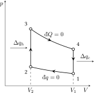
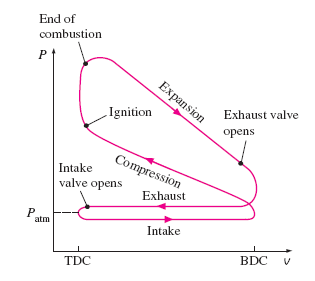

Capítol 2 Combustió
(darrera actualització: 5 de març de 2026)
Índex
2.1 El motor de combustió interna
Un motor de combustió interna (IC) és un conjunt d’elements mecànics que permeten obtenir energia mecànica a partir de l’estat tèrmic d’un fluid de treball generat en el seu propi interior mitjançant un procés de combustió.
Els motors de combustió interna, ja siguin alternatius o de reacció, són les principals fonts d’energia en el transport terrestre, marítim i aeri gràcies a la seva elevada potència específica. Aquests motors només competeixen amb els motors elèctrics en algunes aplicacions del transport ferroviari i, de manera creixent, en vehicles elèctrics purs o en configuració híbrida[5].
En un motor de combustió interna s’introdueix aire i combustible. En els motors d’encesa per espurna, la mescla d’aire i combustible es preparava antigament en el carburador i es conduïa al cilindre. Ara es realitza per mitjà d’injectors, cosa que permet un estalvi de combustible i un millor aprofitament d’aquest. En els motors d’encesa per compressió (Diesel), la mescla es realitza directament dins del cilindre, on el combustible s’injecta després d’haver-hi introduït i comprimit l’aire. Cada cilindre del motor té una vàlvula d’admissió i una d’escapament, que s’obren i tanquen en el moment oportú per permetre l’entrada i sortida de gasos. Els motors típics tenen entre 3 i 12 cilindres, i la potència es pot augmentar afegint més cilindres.
La paret de la cambra de combustió està formada per una camisa de ferro o alumini, i està inserida en un bloc de ferro o acer.
La mescla comprimida a la cambra de combustió es transforma, per efecte de la combustió, en vapor d’aigua ( ), diòxid de carboni (
), diòxid de carboni ( ) i nitrogen (
) i nitrogen ( ). El nitrogen, un gas inert contingut a l’aire, no intervé en la combustió. El vapor d’aigua produït en la combustió es manté i es comporta com un gas permanent.
). El nitrogen, un gas inert contingut a l’aire, no intervé en la combustió. El vapor d’aigua produït en la combustió es manté i es comporta com un gas permanent.
Entre els altres productes de la combustió es troben altres gasos com: monòxid de carboni ( ), hidrogen (), metà (
), hidrogen (), metà ( ) i oxigen (
) i oxigen ( ), quan la combustió ès incompleta. La quantitat d’oxigen que participa en el procés depèn directament de l’excés d’aire introduït respecte al necessari per a la combustió.
), quan la combustió ès incompleta. La quantitat d’oxigen que participa en el procés depèn directament de l’excés d’aire introduït respecte al necessari per a la combustió.
En conseqüència, el fluid de treball està format inicialment per l’aire i el combustible i, després, pel conjunt de gasos produïts durant la combustió. Com ès evident, la seva composició química varia durant el cicle de treball.
2.1.1 El motor de quatre temps
Un motor de quatre temps és aquell que necessita quatre recorreguts del pistó, dues voltes completes del cigonyal, per completar el seu cicle termodinàmic (veure animació a https://www.grc.nasa.gov/www/k-12/airplane/engopt.html).
-
• Primer pas o admissió En aquesta etapa, quan el pistó baixa des del Punt Mort superior (PMS o, en anglès, top dead center, TDC) al Punt Mort Inferior (PMI o, en anglès bottom dead center, BDC), permet que el nou combustible entri per la vàlvula d’injecció. Mentre s’obre aquesta vàlvula, la d’escapament es manté tancada.
-
• Segon pas o compressió Al final de l’execució anterior, el gas dins del cilindre es comprimeix per mitjà del moviment ascendent del pistó, de manera que la vàlvula d’injecció es tanca per la pressió.
-
• Tercer pas o explosió/expansió Després del temps de compressió, quan el pistó torna a la posició superior, s’obté la pressió màxima dins del cilindre. En el nostre cas, tenim un motor dièsel, per la qual cosa el combustible s’injecta polvoritzat i es crema per mitjà de la pressió i la temperatura dins del cilindre. Aleshores, l’expansió del gas fa que el pistó es mogui de nou cap avall; és en aquest moment quan es crea el treball de tot el procés. El treball d’expansió obtingut és aproximadament cinc vegades el treball de compressió necessari.
-
• Quart pas o escapament En aquest últim pas, el moviment superior del pistó fa que els gasos de combustió surtin a través de la vàlvula d’escapament. Quan el pistó està a la part superior, la vàlvula d’escapament es tanca i la injecció s’obre perquè tot el procés es torni a iniciar.
El cigonyal completa dues voltes (720 graus) per cada cicle de quatre temps. Així, el motor de quatre temps necessita dues voltes completes del cigonyal per completar el seu cicle termodinàmic.
Molts dels comportaments del motor es poden descriure mitjançant els conceptes de les lleis dels gasos. Per exemple, segons la llei de Boyle, quan augmenta el volum de la cambra de combustió durant l’aspiració, la pressió disminueix i permet que l’aire entri al cilindre. Durant la compressió, el gas s’escalfa i augmenta la pressió. L’expansió dels gasos calents, descrita per la llei de Charles, ès el mecanisme pel qual es captura l’energia de la combustió i es converteix en energia mecànica per impulsar el vehicle[7].
2.1.2 Fases del Cicle Otto ideal
En aquest context, un procés adiabàtic és aquell en què no hi ha intercanvi de calor amb l’entorn (); un procés isotèrmic manté la temperatura constant (), de manera que el sistema intercanvia calor per compensar els canvis de volum o pressió; i un procés isocòric es produeix a volum constant (), de manera que no es fa treball de frontera ().
La Figure 2.1 mostra els processos termodinàmics que es donen en el cicle Otto[15]:
-
1. 0-1 Aspiració (procés isocòric): La válvula d’admissió s’obre i s’aspira una càrrega d’aire i combustible a una pressió teòricament igual a l’atmosfèrica, provocant el descens del pistó. La válvula d’escapament roman tancada. L’injector de fuel genera un aerosol de combustible, en forma d’una fina boira de gotes minúscules, que es barreja amb l’aire aspirat.
-
2. 1-2 Compressió (procés adiabàtic): No existeix intercanvi de calor entre el gas i les parets del cilindre. La válvula d’admissió i la d’escapament estan tancades i el pistó comença a pujar, comprimint la mescla que es vaporitza.
-
3. 2-3 Combustió (procés isocòric): Ambdues válvules romanen tancades. Quan el pistó arriba a la part superior del seu recorregut, el gas comprimit s’inflama per l’espurna de la bugia. La combustió de tota la massa gasosa ès instantània, per la qual cosa el volum no variarà i la pressió augmentarà ràpidament. Això és degut a que la reacció genera molts més mols de gas que els inicials, i la temperatura augmenta enormement degut a la reacció química.
-
4. 3-4 Expansió (procés adiabàtic): El gas inflamat empeny el pistó. Durant l’expansió, no hi ha intercanvi de calor i, en augmentar el volum, la pressió també augmenta.
-
5. 4-1 Escapament (procés isocòric) Quan el pistó es troba en l’extrem inferior del seu recorregut, la válvula d’admissió roman tancada i s’obre la d’escapament, disminuint ràpidament la pressió sense variar el volum interior. Després, mantenint la pressió igual a l’atmosfèrica, el volum disminueix.
 
2.1.3 Cicle Otto Real
El procés Otto real (Figura 2.1) s’allunya de forma significativa de l’ideal.
-
1. 0-1 Aspiració: La pressió del gas durant l’aspiració és inferior a la pressió atmosfèrica, per tant, el tancament de la válvula d’admissió es produeix després que el pistó arriba a l’extrem inferior de la seva carrera. Això prolonga el període d’admissió i permet l’entrada de la màxima quantitat de mescla d’aire i combustible al cilindre.
-
2. 1-2 Compressió: El gas cedeix calor al cilindre, cosa que fa que es refredi i adquireixi menys pressió.
-
3. 2-3 Combustió: La combustió no ès instantània i el volum de la mescla varia mentre es propaga la inflamació. Per obtenir un màxim treball, és essencial triar el moment adequat per a l’encesa. La xispa ha de saltar abans que el pistó hagi finalitzat la carrera de compressió, cosa que augmenta considerablement la pressió assolida després de la combustió i, per tant, el treball guanyat.
-
4. 3-4 Expansió: L’augment de temperatura dins del cilindre durant la combustió fa que, durant l’expansió, els gasos cedeixin calor al cilindre i es refredin, resultant en una pressió menor. Per tant, es tracta d’un procés no adiabàtic.
-
5. 4-1 Escapament: En realitat, l’escapament no es produeix instantàniament. Els gasos encara tenen una pressió superior a l’atmosfèrica en aquest període. Per això, la válvula d’escapament s’obre abans que el pistó arribi a l’extrem inferior del seu recorregut, permetent que la pressió del gas disminueixi a mesura que el pistó acaba la seva carrera descendent. Quan el pistó realitza la seva carrera ascendent, troba davant seu gasos ja gairebé totalment expandits. A més, la válvula d’admissió s’obre abans que el pistó arribi a l’extrem superior del seu recorregut, generant una certa depressió en el cilindre que afavoreix una aspiració més enèrgica.
2.1.4 Cicle Diesel
El motor Diesel ès un motor de combustió interna basat en el cicle Otto, però amb la diferència que el combustible s’injecta després de la compressió de l’aire.
Durant l’aspiració, entra només aire en el cilindre. En la compressió, l’aire s’escalfa i, quan el pistó arriba al punt mort superior, s’injecta el dièsel. Un motor diesel presenta uns factors de compressió molt més elevats que un motor Otto, i per tant, la temperatura de l’aire comprimit és molt més alta. Això permet que el dièsel s’encengui per la pressió i la temperatura de l’aire comprimit, sense necessitat d’una espurna. Finalment, l’escapament funciona de manera similar al motor d’encesa per espurna.
Aquest motor permet una major eficiència térmica i té avantatges econòmics en diverses aplicacions. Tot i això, presenta dificultats tècniques en sistemes d’injecció i combustió. Per garantir una combustió neta i eficient, el procés es realitza en mil.lisegons. Els motors Diesel usen ratios combustible/aire molt més baixos, amb la qual cosa la combustió és més completa.
2.2 Reaccions de combustió
Per definició, una reacció de combustió ès qualsevol reacció entre un material i un oxidant [típicament ] que allibera energia en forma de calor. Les reaccions químiques alteren els tipus d’enllaços i les posicions relatives dels àtoms dins de les molécules. Els materials inicials s’anomenen reactius, i els materials finals després de la reordenació s’anomenen productes. En una reacció de combustió, el material inicial no oxidant s’anomena combustible i pot ser una varietat de compostos químics[7].
2.2.1 Energia d’enllaç
Per estimar l’entalpia d’una reacció de combustió és útil treballar amb energies d’enllaç mitjanes. Combinant les definicions IUPAC[10, 9]:
-
• en química teòrica, l’energia d’enllaç és l’energia necessària per trencar un determinat tipus d’enllaç entre àtoms en valències concretes;
-
• en pràctica de termoquímica, sovint s’empra l’energia d’enllaç mitjana, definida com el valor promig (en fase gasosa) de les energies de dissociació d’enllaços del mateix tipus.
Aquests valors mitjans es poden obtenir descomponent la calor d’atomització d’una molècula en contribucions dels enllaços individuals. Per això, serveixen per fer estimacions raonables de  , però no substitueixen dades termoquímiques específiques d’una espècie concreta.
, però no substitueixen dades termoquímiques específiques d’una espècie concreta.
En aquesta aproximació, l’entalpia de reacció s’estima amb:
on són energies d’enllaç mitjanes en fase gasosa. Per tant, el resultat és una estimació útil per comparar tendències (exotèrmica vs. endotèrmica), però no un valor d’alta precisió termodinàmica. Com a regla general, enllaços més curts tendeixen a ser més forts i presenten energies d’enllaç més elevades.


Normalment, la combustió es presenta en química general i orgànica com la reacció dels combustibles hidrocarbonats amb l’oxigen per produir diòxid de carboni i aigua:
No obstant això, els combustibles orgànics contenen més elements que només carboni i hidrogen, i produeixen altres gasos a banda del diòxid de carboni i l’aigua. Els motors de combustió interna també generen combustibles hidrocarbonats no cremats i els anomenats NOx térmics, gasos amb la fórmula que es formen quan el nitrogen atmosfèric es torna molt calent i reacciona amb l’oxigen atmosfèric. Aquests gasos contribueixen a les emissions dels motors i es redueixen mitjançant tecnologies d’emissions que es tractaran més endavant.
1 Valors adaptats de Chemistry LibreTexts.
2.2.2 Destil.lació del petroli
La majoria de motors de combustió interna de gasolina i dièsel estan dissenyats per utilitzar fraccions específiques d’hidrocarburs obtingudes del petroli cru. El petroli és una barreja complexa de compostos orgànics provinents de la descomposició de microorganismes marins enterrats. Només els components més lleugers i volàtils són adequats com a combustible per a vehicles[7].
Aquests components se separen del petroli mitjançant destil.lació, un procés on el líquid s’escalfa fins a bullir, i els vapors es refreden i es condensen en un recipient. En la destil.lació industrial, això es fa en una torre de destil.lació, un cilindre metàl.lic on els diferents components del petroli es condensen a diferents alçades segons el seu punt d’ebullició. Els compostos més lleugers surten per la part superior com a vapor, mentre que els més pesats es condensen més avall (Figura 2.2).
El dièsel es destil.la entre 200°C i 350°C i conté hidrocarburs amb entre 8 i 21 àtoms de carboni. La gasolina, més volàtil, conté alcans lieals (parafines), alcans cíclics (naftalens) i alquens (olefines) de 4 a 12 carbonis i es destil.la a temperatures més baixes, pel fet de ser més volàtil. Tant la gasolina com el dièsel inclouen additius químics per millorar la seva estabilitat i resistència a la compressió. Aquests additius solen ser substàncies orgàniques contenir nitrogen, fòsfor i oxigen, i també compostos aromàtics (anells de carboni amb enllaços híbrids).
Per simplificar, l’anàlisi de la combustió es centrarà en la gasolina i un dels seus principals components, l’octà, tot i que el mateix principi s’aplica a altres combustibles.
2.2.3 L’índex d’octà
El número d’octà quantifica la resistència d’un combustible al knock (picat de biela) en motors d’encesa per espurna. El knock apareix quan una part de la mescla aire-combustible s’autoencén abans d’hora durant la compressió, cosa que genera ones de pressió no desitjades i pot reduir rendiment i durabilitat del motor.
Per definir l’escala d’octà s’utilitzen dos combustibles de referència: l’isooctà (2,2,4-trimetilpentà), assignat a 100, i el n-heptà, assignat a 0. Així, un combustible amb índex 90 té un comportament antidetonant equivalent al d’una barreja de 90% isooctà i 10% n-heptà, per comparació en un motor normalitzat (vegeu Taula 2.2).
En assaig es fan servir principalment dues magnituds: RON (Research Octane Number) i MON (Motor Octane Number), que corresponen a condicions de prova diferents. Als sortidors dels EUA, l’etiqueta habitual és l’AKI (Anti-Knock Index), calculat com [17].
És important remarcar que el número d’octà no indica ni el percentatge real d’octà (n-octà) dins la benzina ni l’energia per litre del combustible. Indica, sobretot, estabilitat davant l’autoignició. Per això, motors amb relacions de compressió altes o sobrealimentació acostumen a requerir octans més elevats.
|
Nom |
Fórmula | Índex |
Nom |
Fórmula | Índex |
|
n-heptà |
0 |
o-xilè |
107 | ||
|
n-hexà |
25 |
etanol |
 |
108 | |
|
n-pentà |
62 |
t-butil alcohol |
113 | ||
|
isooctà |
100 |
p-xilè |
116 | ||
|
benzè |
106 |
metil terc-butil èter |
116 | ||
|
metanol |
 |
107 |
toluè |
118 |
Molts combustibles actuals poden presentar índexs d’octà superiors a 100 amb escales específiques d’assaig. Històricament, un additiu anticolp molt utilitzat va ser el tetraetilplom , però es va eliminar progressivament en gasolina d’automoció per toxicitat i per la incompatibilitat amb els sistemes moderns de control d’emissions. Per substituir els additius plomats es van introduir altres potenciadors d’octà, com el metil tert-butil èter (MTBE), l’etanol i determinats aromàtics. Actualment, en molts mercats, l’etanol és un dels oxigenats més habituals perquè incrementa l’índex d’octà i es pot integrar en mescles comercials de gasolina[17].
2.3 Termodinàmica de la combustió
Les reaccions químiques poden ser, a nivell del calor que intercanvien amb l’entorn:
-
• exotèrmiques: si desprenen calor i, per tant, l’energia dels productes és més baixa que la dels reactius; o bé
-
• endotèrmiques: si l’absorbeixen i els productes acaben tenint més energia que els reactius.
En moltes ocasions mirem d’obtenir treball a partir de la calor produïda en una reacció, com succeix, per exemple, en un procés de combustió o en les reaccions electroquímiques que fan funcionar motors de combustió o elèctrics. La calor generada per la combustió d’una quantitat de combustible s’anomena calor de combustió, i es mesura en J/mol. Aquesta quantitat varia segons el combustible i la seva composició.
La termodinàmica estudia les relacions entre energia, calor i treball. En aquest capítol treballarem al voltant de la termoquímica, la termodinàmica associada a les reaccions químiques, no només a la combustió
Sistemes, estats i funcions d’estat
Anomenem sistema a aquella part de l’univers que volem tractar en algun càlcul o experiment. Per exemple, un sistema pot ser un cilindre en un motor de combustió o bé una bateria elèctrica.
L’estat del sistema es caracteritza per unes determinades variables d’estat (, ,  ,
,  , ,...), magnituds físiques macroscòpiques mesurables. La termodinàmica estudia els estats d’equilibri dels sistemes, en els quals les variables d’estat són idèntiques en totes les seves parts i invariables en el temps:
, ,...), magnituds físiques macroscòpiques mesurables. La termodinàmica estudia els estats d’equilibri dels sistemes, en els quals les variables d’estat són idèntiques en totes les seves parts i invariables en el temps:
-
1. En els canvis d’estat d’un sistema, les variables d’estat només depenen de l’estat inicial i final, i no del camí utilitzat. Així, per exemple, el treball
 no és funció d’estat, mentre que l’energia sí que ho és.
no és funció d’estat, mentre que l’energia sí que ho és.
-
2. En fixar els valors d’algunes d’elles, una equació d’estat determina automàticament el valor de les altres. Així, per exemple, en un gas ideal, si coneixem , i
, podem determinar , , , etc.
Els canvis d’estat poden ser
-
• reversibles: quan les funcions d’estat varian de manera infinitessimal, mantenint el sistema constantment en l’equilibri (l’expansió d’un gas contra una pressió que difereix només de la pressió interna, per exemple);
-
• irreversibles: en qualsevol altre situació (un procés de combustió, l’expansió d’un gas contra el buit, etc).
2.3.1 Treball
El treball realitzat per una força en desplaçar un cos entre dues posicions es calcula segons:
Tenint en compte que , és fàcil veure que, en el cas d’un pistó que exerceixi una pressió externa sobre un gas
tenim
i, per tant,
EXEMPLE 1. Treball en una expansió isobàrica
Considerem un gas ideal que s’expandeix isobàricament (a pressió constant) des d’un volum inicial fins a un volum final . El treball realitzat pel gas durant aquesta expansió es pot calcular com:
On és la pressió externa constant. Si la pressió està en Pa i el volum en m3, el treball es mesura en J.
Per exemple, si un gas s’expandeix des de 1 m3 fins a 2 m3 a una pressió constant de 100 kPa, el treball realitzat pel gas és:
El signe negatiu indica que el treball és realitzat pel sistema (el gas) sobre l’entorn.
2.3.2 Calor
La calor  és una magnitud macroscòpica que representa l’efecte d’infinitud de treballs microscòpics deguts als moviments de les partícules d’un sistema. Com el treball, no és una funció d’estat, ja que depèn del camí que utilitzem per transferir-lo. La calor es medeix en calories o Joules.2
és una magnitud macroscòpica que representa l’efecte d’infinitud de treballs microscòpics deguts als moviments de les partícules d’un sistema. Com el treball, no és una funció d’estat, ja que depèn del camí que utilitzem per transferir-lo. La calor es medeix en calories o Joules.2
La quantitat de calor necessària per incrementar la temperatura un determinat valor d’1 mol de substància és
Si aquesta expressió la usem per explicar un procés infinitessimal per a una determinada quantitat de mols  , obtenim
, obtenim
I com que la capacitat calorífica es pot obtenir a o a , podem calcular
i
EXEMPLE 2. Calor en un procés isocòric
Considerem ara un gas ideal que s’escalfa isocòricament (a volum constant) des d’una temperatura inicial fins a una temperatura final . La calor transferida al gas durant aquest procés es pot calcular com:
On és el nombre de mols de gas, és la capacitat calorífica molar a volum constant, i és el canvi de temperatura. Si la capacitat calorífica està en J/(mol K) i la temperatura en K, la calor es mesura en J.
2 Definim com caloria la quantitat de calor necessària per escalfar 1 gr d’aigua 1 °C. Per tant, la capacitat calorífica de l’aigua és . En realitat, això només és cert per a una temperatura donada, ja que la capacitat calorífica depèn lleugerament de la temperatura de partida. En el cas de l’aigua, la caloria es defineix per al pas de 14.5°C a 15.5°C. La quantitat de treball necessària per produir aquesta calor es va determinar per Mayer y Joule el s. XIX com 1 cal=4,186 0 J. En química usem més sovint les Capacitats calorífiques molars, , que indiquen la quantitat de calor necessària per escalfar un mol d’una substància 1°C.
2.3.3 Primera llei de la termodinàmica
La primera llei de la termodinàmica estableix que l’energia no es pot crear ni destruir, sinó que es pot transformar d’una forma a una altra. Això es pot expressar com:
on és la variació d’energia interna, és la calor transferida al sistema i és el treball realitzat sobre el sistema. és una funció d’estat, ja que el seu increment depèn només de l’estat inicial i final, no del camí seguit per arribar-hi. És per això que l’escrivim en majúscules, a diferència de la calor i el treball, que són funcions de camí.
Imaginem una reacció que es dona a pressió constant. En aquest cas, la calor transferida al sistema és la calor de combustió, i el treball realitzat és el treball de compressió. Així, la primera llei de la termodinàmica es pot reescriure com:
on és la pressió i és el canvi de volum. En forma integral, si la pressió no fos constant, això es pot expressar com:
Si la reacció estudiada fos a volum constant, és a dir, en un recipient tancat, el treball de compressió seria zero i la primera llei es reduiria a:
Per tant, per mesurar la calor de combustió d’un combustible, es pot utilitzar un calorímetre a volum constant, on tota l’energia alliberada per la reacció es converteix en calor. Les reaccions que desprenen calor s’anomenen exotèrmiques, mentre que les que l’absorbeixen s’anomenen endotèrmiques. Si el sistema absorbeix calor, la variació d’energia interna serà positiva, i si la despren, serà negativa.
Normalment, però, les reaccions químiques succeeixen a pressió constant, i per tant, la calor de combustió es mesura a pressió constant. Això es pot fer amb un calorímetre a pressió constant, on la calor de combustió es converteix en treball de compressió. En aquest cas, ens convé més usar una altra funció d’estat, l’entalpia, que es defineix com:
i la calor de combustió es pot expressar com:
cal notar que a pressió constant, , i . Per tant,
Novament, per a un procés exotèrmic a pressió constant, la variació d’entalpia serà negativa, ja que el sistema allibera calor. Això és el que succeeix en una reacció de combustió.
Cal notar que i són funcions d’estat, però no són iguals, ja que inclou el treball de compressió. No obstant això, en processos en solució, el treball de compressió és negligible i .
2.3.4 Segona llei de la termodinàmica i entropia
L’entropia () és una funció d’estat que quantifica la dispersió de l’energia. Per a un procés reversible:
Per a un canvi entre dos estats i :
Com que és funció d’estat, la integral reversible defineix una diferencial exacta. En qualsevol procés real (irreversible) es compleix la desigualtat de Clausius:
on és la temperatura de l’entorn amb què s’intercanvia calor. La unitat de l’entropia és J/K.
La segona llei també es pot expressar dient que, en un sistema aïllat, l’espontaneïtat requereix augment d’entropia:
i a l’equilibri:
A escala qualitativa, processos com la mescla espontània de gasos o la difusió tendeixen a augmentar . En canvis irreversibles, l’increment real d’entropia de l’univers és superior al calculat pel camí reversible equivalent.
Expansió adiabàtica: reversible vs irreversible
En una expansió adiabàtica, , però el comportament de l’entropia depèn de si el procés és reversible o no.
Cas reversible (isentròpic):
No hi ha intercanvi de calor i el camí és quasiestàtic; per això, l’expansió adiabàtica reversible és isentròpica.
Cas irreversible (p. ex. expansió lliure):
Tot i que , es genera entropia interna per la irreversibilitat del procés.
Cal distingir:
-
• adiabàtic ,
-
• isentròpic (només si també és reversible).
La definició general és:
![\[ dS=\frac {\delta q_{\mathrm {rev}}}{T} \]](web_GEACombustio-images/image-123.svg)
Això recorda que, fins i tot si en el procés real , el càlcul de s’ha de fer amb un camí reversible equivalent.
Per a un gas ideal en expansió lliure adiabàtica:
2.3.5 Tercera llei de la termodinàmica
La tercera llei estableix que l’entropia d’un cristall perfecte és zero al zero absolut:
Això permet passar de diferències d’entropia a valors absoluts.
Per a una substància pura, l’entropia absoluta a una temperatura es pot calcular integrant la calor reversible i sumant les contribucions dels canvis de fase:
En pràctica:
on és l’entalpia de transició (fusió, vaporització, etc.) a la temperatura .
Com a tendències generals, l’entropia molar estàndard sol augmentar quan:
-
• la fase passa de sòlid a líquid i de líquid a gas,
-
• augmenta la massa molar,
-
• augmenta la complexitat molecular.
2.3.6 Entropia i desordre
En mecànica estadística, l’entropia es relaciona amb el nombre de microestats accessibles () mitjançant l’equació de Boltzmann:
on és la constant de Boltzmann. Aquesta expressió mostra que, com més configuracions microscòpiques compatibles amb un estat macroscòpic, més gran és l’entropia.
Per això, processos com la mescla de gasos, la difusió d’un solut o l’expansió lliure d’un gas tendeixen espontàniament cap a estats més desordenats (més probables) i amb entropia més alta.
2.3.7 Increment d’entalpia estàndard
L’increment d’entalpia estàndard d’una reacció, , és la variació d’entalpia que es produeix quan els reactius en els seus estats estàndard es converteixen en productes en els seus estats estàndard. Els estats estàndard es defineixen a una pressió d’1 bar i una temperatura específica, generalment 298.15 K (25°C). Aquesta magnitud és molt útil per calcular la calor alliberada o absorbida en una reacció química, ja que permet comparar diferents reaccions en condicions similars. Per exemple, l’increment d’entalpia estàndard de la combustió del metà és:
Aquesta equació indica que la combustió d’un mol de metà allibera 890.3 kJ d’energia en forma de calor. Els valors d’increment d’entalpia estàndard per a moltes reaccions es poden trobar en taules termodinàmiques[12] (algunes estàn recollides en la taula de paràmetres termodinàmics del curs).
2.3.8 Llei de Hess
La llei de Hess estableix que el canvi d’entalpia d’una reacció química és independent del camí seguit per arribar als productes finals, depenent només dels estats inicial i final. Això permet calcular l’entalpia de reaccions complexes a partir de reaccions més senzilles. Per exemple, considerem la combustió del propà ():
Podem descompondre aquesta reacció en passos més simples basats en les entalpies de formació (veure taula de paràmetres termodinàmics):
L’entalpia total de la reacció de combustió es pot calcular, aleshores, sumant les entalpies dels passos individuals:
Substituint els valors:
Així, la llei de Hess ens permet determinar l’entalpia de reaccions complexes utilitzant dades d’entalpia de reaccions més simples.
L’entalpia estàndard de formació,  és la variació d’entalpia que es produeix quan un mol d’una substància es forma a partir dels seus elements en els seus estats estàndard. L’entalpia d’una reacció es pot calcular a partir de les entalpies de formació estàndard dels reactius i productes utilitzant la següent fórmula:
és la variació d’entalpia que es produeix quan un mol d’una substància es forma a partir dels seus elements en els seus estats estàndard. L’entalpia d’una reacció es pot calcular a partir de les entalpies de formació estàndard dels reactius i productes utilitzant la següent fórmula:
La Figura 2.3, per exemple, mostra el cicle termodinàmic que ens permet calcular l’entalpia de combustió de la glucosa a partir d’entalpies de formació tabulades.
2.3.9 Càlcul de l’entropia estàndard de reacció
L’entropia estàndard de reacció es calcula de manera anàloga a l’entalpia estàndard:
on són els coeficients estequiomètrics i  les entropies molars estàndard tabulades.
les entropies molars estàndard tabulades.
EXEMPLE 3. Càlcul de  d’una reacció gasosa
d’una reacció gasosa
Per a:
amb (en J/(K mol)):
tenim:
Aquest signe negatiu és coherent amb la disminució del nombre total de mols gasosos (de 4 a 2).
2.3.10 Capacitat calorífica
Com hem vist més amunt, la capacitat calorífica es pot expressar com:
La capacitat calorífica a pressió constant es denota com i a volum constant com . La diferència entre ambdues és el treball de compressió, i es pot expressar, en el cas dels gasos, com:
En el cas de líquids i sòlids, les dues capacitats calorífiques són pràcticament iguals, ja que el treball de compressió és negligible. En el cas dels gasos, la capacitat calorífica a pressió constant és lleugerament més gran que a volum constant, ja que el treball de compressió és positiu.
| Substància | Fórmula | Substància | Fórmula | ||
| Monòxid de carboni | |
6.97 | Metà | |
8.53 |
| Oxigen | |
7.05 | Nitrogen | |
6.97 |
| Diòxid de carboni | |
8.96 | Hidrogen | 6.88 | |
| Aigua (vapor) | 8.02 | Etanol |  |
26.9 | |
| Propà | 17.6 | Butà | 23.5 |
Relació entre la capacitat calorífica a pressió constant i a volum constant
Per deduir aquesta relació, considerem la primera llei de la termodinàmica:
A volum constant, el treball de compressió és zero (), i per tant.
A pressió constant, la calor afegida al sistema es descompon en l’increment d’energia interna i el treball de compressió.
Utilitzant l’equació d’estat dels gasos ideals, , i per a  podem escriure:
podem escriure:
i, per tant:
La capacitat calorífica es pot expressar en forma diferencial com:
2.3.11 Dependència de l’entalpia i l’entropia amb la temperatura
En termodinàmica, moltes dependències amb la temperatura estan governades per la capacitat calorífica a pressió constant, , que mesura quanta energia cal aportar per elevar la temperatura d’una substància.
Entalpia (): equació de Kirchoff
A pressió constant:
Per tant, en passar de a :
En una reacció química, aquesta idea s’aplica a la variació d’entalpia de reacció. Imaginem que volem calcular l’entalpia d’una reacció a una temperatura a partir de l’entalpia a una temperatura . Com que l’entalpia és una funció d’estat, podem calcular la variació d’entalpia entre i seguint aquest camí:
Podem obtenir la variació d’entalpia com (recordem que la variació d’entalpia és precisament la variació de calor a pressió constant):
Si definim la diferència de calor específica:
les integrals es poden combinar en:
En el cas que sigui constant, la integral es resol com:
Entropia (): augment del desordre molecular
També a pressió constant:
I, per tant:
Com que habitualment ,3 l’entropia augmenta amb la temperatura: en escalfar, les partícules poden accedir a més microestats i creix el desordre energètic del sistema.
EXEMPLE 4. Càlcul de l’entalpia a una altra temperatura
Per exemple, donada la reacció:
amb , calculem a 398 K. De la Taula 2.3, tenim:
Substituïm a la fórmula 2.25:
3 Un exemple en el que això no es compleix és en un procés d’expansió adiabàtica d’un gas ideal, on decreix a mesura que el gas s’expandeix i es refreda (veure exemple https://www.youtube.com/watch?v=v1VUpHjQ3V4).
2.4 Turbocompressors
En qualsevol reacció química, la combustió implica un reactiu limitant. La cambra de combustió actua com un reactor on el combustible es barreja amb l’oxidant () i s’encén mitjançant una descàrrega elèctrica que supera la barrera d’energia d’activació. L’entrada de combustible és altament controlable, però el reactiu limitant sol ser l’. Millorar l’aportació d’ augmenta la potència i l’eficiència del motor.
Un motor de quatre temps amb aspiració natural depèn del buit generat pel moviment descendent del pistó per captar . Idealment, un cicle complet del pistó absorbeix un volum de gas igual a la cilindrada del motor. No obstant això, les pèrdues per fricció redueixen l’entrada real, definint l’eficiència
volumètrica, (aire real que entra al cilindre entre volum d’aquest cilindre), que sempre és inferior a 1. Això, combinat amb el 21 % de en l’aire, limita l’eficiència de la combustió.
Turbocompressors versus compressors volumètrics
Els dos sistemes tenen el mateix objectiu: augmentar la massa d’aire que entra al cilindre i, per tant, la quantitat d’ disponible per cicle.
En un compressor centrífug (arquitectura típica de molts turbocompressors), el rotor o impel·lidor transfereix energia al gas i n’incrementa la velocitat; després, el difusor transforma part d’aquesta energia cinètica en pressió estàtica. El balanç ideal es pot expressar amb l’equació d’Euler de turbomàquines:
on és el treball específic transferit al fluid, és la velocitat perifèrica del rotor i la component tangencial de la velocitat absoluta.
La diferència principal entre tecnologies és la font d’energia mecànica:
-
• Compressor volumètric (mecànic): va acoblat al cigonyal (corretja/engranatges) i consumeix part de la potència del motor.
-
• Turbocompressor: el compressor és impulsat per una turbina alimentada pels gasos d’escapament, de manera que recupera part de l’energia residual de l’escapament.
En conseqüència, el turbo sol oferir una millor eficiència global per a una mateixa sobrealimentació, tot i que incrementa la complexitat tèrmica i de control (retard de resposta, temperatura d’admissió, necessitat d’intercooler, etc.)[8].
Analitzem el procés de combustió en un motor convencional i en un motor turboalimentat per entendre millor el paper dels sistemes d’admissió forçada. Si assumim que tota l’energia del motor prové de la combustió de l’octà pur, la reacció termoquímica equilibrada a 298 K és:
Considerem un motor bòxer de 2,5 L d’un Subaru Outback del 2005 amb una eficiència volumètrica del 80 %, un valor típic en motors atmosfèrics. Si la bomba de combustible proporciona prou octà segons la relació estequiomètrica, per determinar l’energia generada en un cicle del motor, cal
calcular la quantitat d’ disponible en aquest cicle:
Si considerem que tot passa a 17 graus de temperatura externa i pressió atmosfèrica:
L’energia generada en un cicle serà:
Si considerem el Subaru Outback 2.5 XT del 2005, amb el mateix motor equipat amb un turbocompressor que genera de sobrealimentació, això augmenta la pressió d’admissió de () a (). Assumint les mateixes condicions i simplificacions, calculem l’energia generada:
Això representa un augment d’aproximadament el en l’energia per cicle, coherent amb l’increment de pressió. No obstant això, l’augment real de potència no es duplica. Segons Subaru, el motor atmosfèric produeix a , mentre que el turboalimentat genera a . Convertim aquestes potències en energia per cicle:
Aquestes xifres són menors que les prediccions ideals, ja que el model assumeix una conversió del de calor en treball. L’eficiència real d’un motor de combustió típic és inferior. També cal considerar l’augment de temperatura de l’aire d’admissió causat pel turbocompressor, que redueix la densitat de l’aire i el nombre de mols d’ disponibles.
disponibles.
Per mitigar l’escalfament de l’aire comprimit pel turbo, s’utilitza un intercanviador de calor (intercooler), habitualment de tipus aire-aire. En refredar l’aire d’admissió abans d’entrar al cilindre, n’augmenta la densitat i es recupera part del guany de massa d’ que es perdria per efecte de la temperatura. El Subaru de 250 hp incorpora aquest sistema amb una presa d’aire dedicada; per això, l’augment de potència observat no es pot atribuir només a la sobrepressió del turbo i, en conseqüència, la relació simple “més pressió = mateix percentatge de
guany de potència” sobreestima el resultat real.
Sistemes d’injecció metanol/aigua
Per reduir les temperatures del gas d’entrada en sistemes d’inducció forçada, es pot utilitzar el refredament evaporatiu d’un fluid injectat directament al corrent de gas. Injectar metanol o una barreja d’aigua/metanol abans o després del cos de l’accelerador, o directament a la cambra de combustió, ajuda a refredar els gasos d’entrada. L’entalpia de vaporizació de l’aigua és de 40,68 kJ/mol i la del metanol 35,3 kJ/mol, eliminant així calor durant la vaporizació.
Aquests compostos tenen punts d’ebullició moderats, permetent-los ser líquids a temperatures ambientals i vaporitzar-se fàcilment en l’aire d’entrada dels vehicles d’inducció forçada (metanol: 148 °F, aigua: 212 °F). Les velocitats d’evaporació són altes gràcies a sistemes d’injecció que generen gotes petites, augmentant la superfície de contacte, com en els injectors de combustible.
Els gasos d’entrada més freds augmenten la densitat d’oxigen a les cambres de combustió, permetent cremar més combustible i augmentant la potència del motor. Aquest refredament evaporatiu també pot prevenir la predetonació en motors d’inducció forçada o d’alta compressió, permetent optimitzar el temps d’encesa o utilitzar combustibles de menor octanatge. Refredar els gasos de combustió redueix també la temperatura dels gasos d’escapament, minimitzant la producció de NOx tèrmics (els NOx generats quan el nitrogen atmosfèric contacta amb superfícies molt calentes com col·lectors d’escapament i convertidors catalítics).
Aquests sistemes d’injecció poden utilitzar-se amb o sense interrefredadors, i existeixen sistemes comercials disponibles per a automòbils[7].
A més, els turbocompressors (i en menor mesura els compressors mecànics) poden millorar l’eficiència del combustible en els vehicles. Per exemple, si es considera que 150 hp és una potència adequada per a un automòbil i una empresa fabrica un motor de 2,0 L sense aspiració forçada amb aquesta potència, també es podria aconseguir la mateixa potència amb un motor més petit, per exemple de 1,5 L, i un turbocompressor. Tots dos motors consumirien la mateixa quantitat de combustible durant l’acceleració, però a velocitat de creuer constant, el motor de 1,5 L hauria de consumir menys combustible que la versió de 2,0 L. Tot i això, el règim de revolucions per minut en una velocitat de creuer específica depèn de la transmissió i altres factors, fent que el motor turbo de 1,5 L probablement funcioni a un règim més alt que el motor de 2,0 L, reduint el guany d’eficiència previst.
Injecció d’òxid nitrós
Un altre mètode per augmentar l’eficiència del motor és la injecció de òxid nitrós (N2O), que actua com un oxidant alternatiu a la cambra de combustió. Quan un mol de es descompon en un cilindre calent del motor, es genera un mol de i mig mol d’, proporcionant una atmosfera amb un 33 % d’oxigen, molt superior al 21 % de l’aire atmosfèric. A més d’aquest enriquiment en oxigen, l’evaporació del líquid en el sistema d’admissió refreda substancialment els gasos d’entrada, augmentant-ne la densitat i millorant l’eficiència volumètrica del motor.
Els principals inconvenients d’aquest sistema són que només funciona mentre hi hagi en els dipòsits a bord (a diferència dels turbocompressors i compressors mecànics, que operen contínuament), la pressió del dipòsit requereix un control acurat i les peces del motor pateixen tensions més altes[7].
2.5 Biofuels
Podem també utilitzar les entalpies de formació i combustió per entendre per què els cotxes tenen un menor rendiment de combustible amb combustibles que inclouen etanol. Com que la gasolina és una mescla complexa de compostos orgànics (com s’ha esmentat anteriorment), suposarem que la gasolina és predominantment octà per a aquest exercici (basat en [7]). Hem vist que la combustió d’1 mol d’octà genera 5 470 kJ d’energia (fàcil de calcular usant entalpies de formació). Utilitzant la densitat típica de la gasolina (0,74 kg/L) i un simple factor de conversió, podem determinar la densitat energètica de la gasolina pura d’octà:
Ara, podem utilitzar els conceptes de la llei de Hess i les equacions termoquímiques per determinar l’energia alliberada en cremar 1 mol d’etanol i després usar la densitat de massa i la massa molecular per determinar la seva densitat energètica.
Les entalpies estàndard de formació per al (g), l’etanol (l) i l’aigua líquida són, respectivament:
Calcularem l’energia calorífica obtinguda en la combustió d’1 L d’alcohol etílic amb densitat 790 kg/m3 en condicions estàndard.
Es pot notar que hi ha substancialment menys energia per litre d’etanol que per litre d’octà. Ara suposem que el teu trajecte diari per l’autopista requereix 200 000 kJ d’energia. Aquesta energia s’utilitza per accelerar el vehicle fins a la velocitat de creuer i inclou les pèrdues d’energia per ineficiències del motor i la transmissió, forces de fregament per mantenir la velocitat i l’energia convertida per l’alternador. Si el teu cotxe utilitzés gasolina composta per un 100% d’octà, el càlcul següent mostra que necessites cremar 5,65 L de gasolina per fer aquest trajecte:
Ara calculem el volum de combustible necessari per al mateix trajecte si el dipòsit conté un 90% en volum d’octà i un 10% d’etanol. L’energia per litre del combustible barrejat és la mitjana ponderada de les densitats energètiques de l’etanol i l’octà:
La situació és encara pitjor per a un vehicle E-85 que crema un 85% d’etanol, on càlculs similars mostren que cal cremar 7,95 L per cobrir la mateixa distància.
2.5.1 L’etanol i el nostre futur energètic
Malgrat el menor contingut energètic per litre, l’etanol té avantatges pràctics: crema a temperatura més baixa que gasolina o dièsel (reduint sutge i NOx), té un índex d’octà alt (113) i, en ser un combustible oxigenat, pot afavorir una combustió més completa. A més, barrejar gasolina amb etanol produït
localment pot reduir la dependència d’importacions. Quan l’etanol prové de cultius, part del emès en la combustió es compensa amb l’absorció durant el creixement de la biomassa. Tot i això, el balanç real entre emissions, energia neta i ús del sòl no és trivial.
Per això, per avaluar si l’etanol () aporta un benefici energètic o climàtic net, cal una anàlisi completa del cicle de vida (entrades/sortides d’energia, emissions i impactes econòmics). Els resultats depenen fortament de la matèria primera (blat de moro, canya de sucre, etc.), i això enllaça amb el debat entre seguretat energètica i
seguretat alimentària[6].
2.5.2 Biodièsel: Convertint residus en energia
Els motors dièsel són més eficients que els de gasolina i poden funcionar amb olis vegetals purs o modificats químicament. La similitud entre els hidrocarburs del dièsel (cadenes C10–C20) i els àcids grassos dels olis vegetals ho fa possible, però hi ha limitacions clares:
-
• Viscositat i fluïdesa: A temperatures baixes, l’oli vegetal pot gelificar, impedint el seu flux cap al motor.
-
• Impureses: Cal filtrar l’oli per eliminar sediments que podrien obstruir els injectors i generar dipòsits de carboni.
-
• Reactivitat química: Els olis vegetals s’oxiden més fàcilment que els combustibles derivats del petroli, reduint la seva estabilitat i afectant la lubricació del motor.
Per això, molts vehicles adaptats a oli vegetal usen dos dipòsits: un d’oli vegetal i un de dièsel per facilitar l’arrencada i reduir dipòsits de carboni. Una alternativa és convertir l’oli vegetal (nou o usat) en biodièsel. Els reactius principals són els triglicèrids (àcids grassos units a glicerol), juntament amb una fracció variable d’àcids grassos lliures.
Si s’utilitza oli vegetal usat, primer cal filtrar i pretractar per eliminar sòlids i restes d’aliments. Un cop net, es determina el contingut d’àcids grassos lliures mitjançant titulació amb una base forta (p. ex. )[1]. El següent pas és dur a terme una reacció química anomenada transesterificació, que separa les molècules d’àcids grassos dels triglicèrids, donant com a resultat èsters d’àcids grassos i glicerol[4]:
Aquest procés es fa afegint un alcohol a l’oli; el més habitual és el metanol () pel seu cost i disponibilitat, tot i que també es poden usar altres alcohols curts. Com que la reacció és lenta, s’hi afegeix una base forta (com ) que neutralitza àcids grassos lliures i genera l’alcoxi reactiu. Després de la reacció, la barreja se separa en dues fases: una rica en èsters d’àcids grassos (biodièsel) i una altra rica en glicerina i impureses. La fase de biodièsel es pot rentar per eliminar base i alcohol residuals; l’alcohol també es pot
recuperar per destil·lació. Finalment, el biodièsel es desseca i s’emmagatzema per al seu ús.
El biodièsel té avantatges i inconvenients respecte al dièsel fòssil. Entre els avantatges, destaca el contingut molt baix de sofre, que redueix la formació de (pluja àcida), i la disminució de certs contaminants (com PAH i hidrocarburs incombustos) reportada en diversos estudis. Tanmateix, la composició química diferent del biodièsel pot accelerar la degradació d’alguns materials (mànegues, juntes de goma). Per això, sovint s’utilitzen mescles estàndard; per exemple, el B-20 (20% biodièsel) pot mantenir bona operabilitat i reduir emissions respecte al dièsel pur.
Com en el cas de l’etanol, el balanç final del biodièsel s’ha d’avaluar amb una anàlisi de cicle de vida. Tot i això, transformar un residu com l’oli vegetal usat en combustible pot aportar un benefici energètic i ambiental rellevant.
2.6 Tecnologia de Reducció Catalítica Selectiva (SCR)
Un sistema SCR injecta Diesel Exhaust Fluid (DEF, comercialment AdBlue©) als gasos d’escapament calents. El DEF allibera , que actua com a agent reductor dels sobre el catalitzador, convertint-los principalment en i . L’ no s’emmagatzema directament per motius de seguretat; s’obté in situ a partir d’urea aquosa. Això permet ajustar el motor per eficiència i gestionar els al posttractament. A la línia d’escapament, els gasos passen primer per un catalitzador d’oxidació (DOC), que oxida , hidrocarburs i part del  a . Aquest pas és útil perquè la via SCR és especialment ràpida quan la relació / és propera a 1:1.
a . Aquest pas és útil perquè la via SCR és especialment ràpida quan la relació / és propera a 1:1.
AdBlue és una solució aquosa que conté un 32,5 % d’urea d’alta puresa (per pes) en aigua desionitzada. L’amoníac es genera en fase gasosa mitjançant les següents reaccions[16]:
En conjunt, el procés SCR es basa en les següents reaccions globals, que tenen lloc en fase gasosa o adsorbida:
Entre aquestes, la més ràpida és la SCR ràpida (mescla equimolar /); d’aquí la importància del DOC per oxidar parcialment a i millorar el rendiment global del sistema (Figura 2.4). També es poden produir reaccions no desitjades que consumeixen o formen subproductes, reduint l’eficiència:
Aquestes vies són especialment rellevants a temperatures altes (>400 °C) i amb poc . En canvi, a baixa temperatura i amb excés de , pot aparèixer nitrat d’amoni i :
La formació de nitrat d’amoni és crítica per sota de 180 °C i limita l’eficàcia del SCR en fred. A temperatures lleugerament superiors (), pot consumir aquest compost i regenerar condicions favorables per a la via SCR ràpida, especialment amb catalitzadors Fe-zeolita o -/ . Finalment, el sofre del combustible, combinat amb l’acció oxidant del DOC, pot formar i, després, sulfats i àcid sulfúric:
. Finalment, el sofre del combustible, combinat amb l’acció oxidant del DOC, pot formar i, després, sulfats i àcid sulfúric:
Aquests compostos poden bloquejar porus del catalitzador i desactivar-lo (en part reversible per desulfatació tèrmica). L’àcid sulfúric, a més, afavoreix corrosió i formació d’aerosols nocius. Per saber-ne més, consulteu [16].
2.7 Exercicis
Exercici 1. Reacció de combustió de l’octà
Mostra la resolució
Resolució disponible a Exercise.pdf i als materials d autoavaluacio daquest tema.
Determina la reacció de combustió de l’octà en presència d’aire.
Exercici 2. Entalpia de formació del metà (Exercici E2.1, 2025)
Mostra la resolució
Resolució disponible a Exercise.pdf i als materials d autoavaluacio daquest tema.
Troba la calor normal de formació del metà, a partir dels valors de les calors estàndar de combustió del (grafit), l’ i el que tenim al formulari del curs.
Qüestió 3. Calcular l’entalpia normal de formació de l’ió a partir de les següents calors de reacció:
Exercici 4. Calor normal de reacció
Mostra la resolució
Resolució disponible a Exercise.pdf i als materials d autoavaluacio daquest tema.
Calcula la calor normal de la reacció
Exercici 5. Entalpia de reacció (Exercici E2.2, 2025)
Mostra la resolució
Resolució disponible a Exercise.pdf i als materials d autoavaluacio daquest tema.
Calcula l’entalpia estàndard de la reacció següent utilitzant energies d’enllaç del capítol 9, ”Strengths of Chemical Bonds”del CRC Handbook of Chemistry and Physics[12]:
Dóna la resposta en kJ/mol.
Exercici 6. Energia per trencar enllaços 
Sabent que l’energia d’enllaç és 431 kJ/mol, quina energia cal per dissociar completament 2,00 mol de en àtoms?4
Exercici 7. amb energies d’enllaç: formació de
Estima l’entalpia de reacció per:5
usant , i .
Exercici 8. amb energies d’enllaç: descomposició de l’aigua
Calcula l’entalpia de reacció per:6
emprant , i .
Exercici 9. Entalpia de vaporització de l’aigua
Mostra la resolució
Resolució disponible a Exercise.pdf i als materials d autoavaluacio daquest tema.
Determineu l’entalpia de vaporització de l’aigua en condicions estàndard a partir de les següents reaccions:
Exercici 10. Entalpia de reacció
Mostra la resolució
Resolució disponible a Exercise.pdf i als materials d autoavaluacio daquest tema.
Tenint en compte aquestes energies d’enllaç:
| / kJ mol | |
| C-O al monòxid de carboni | +1077 |
| C-O al diòxid de carboni | +805 |
| O-H | +464 |
| H-H | +436 |
Calcula l’entalpia de la reacció:
Exercici 11.
Mostra la resolució
Resolució disponible a Exercise.pdf i als materials d autoavaluacio daquest tema.
Calcula l’energia lliure, l’entalpia i l’entropia normals per a la reacció . Què afavoreix i què desafavoreix la reacció? Succeiria igual a qualsevol temperatura?
Exercici 12. Entropia: evaporació d’aigua (adaptat de LibreTexts)
Mostra la resolució
Resolució disponible a Exercise.pdf i als materials d autoavaluacio daquest tema.
Calcula la variació d’entropia quan 1 mol d’aigua s’evapora a 373 K i  . Usa .
. Usa .
Exercici 13. Entropia de reacció: descomposició de l’aigua (adaptat de LibreTexts)
Mostra la resolució
Resolució disponible a Exercise.pdf i als materials d autoavaluacio daquest tema.
Per a la reacció
calcula i indica si el signe és coherent amb el canvi de fase/quantitat de gas.
Exercici 14. Ordenació d’entropia molar estàndard (adaptat de LibreTexts)
Mostra la resolució
Resolució disponible a Exercise.pdf i als materials d autoavaluacio daquest tema.
Ordena de menor a major entropia molar estàndard:
Exercici 15. Comparació d’entropies: vs  (adaptat de LibreTexts)
(adaptat de LibreTexts)
A igual estat físic i condicions estàndard, quina espècie té més alt: o ?
Exercici 16. Comparació d’entropia entre fases (adaptat de LibreTexts)
Mostra la resolució
Resolució disponible a Exercise.pdf i als materials d autoavaluacio daquest tema.
Quina fase té entropia molar estàndard més gran: o ?
Exercici 17. Estimació de amb energia d’enllaç (adaptat de LibreTexts)
L’energia d’enllaç molar de és 502 kJ/mol. Estima per a:
prenent i usant .
Exercici 18. Entropia absoluta del nitrometà gasós
Mostra la resolució
Resolució disponible a Exercise.pdf i als materials d autoavaluacio daquest tema.
Jones i Giauque[11] donen per al nitrometà () valors experimentals de capacitat calorífica a pressió constant, , en funció de la temperatura.
El primer bloc (fins a prop de ) correspon essencialment al sòlid; el segon bloc (per sobre de ) inclou el líquid. Aquestes dades permeten calcular les contribucions necessàries per obtenir l’entropia absoluta per la tercera llei.
![\[ \begin {array}{c|cccccccccc} T\ (\si {\kelvin }) & 15 & 20 & 30 & 40 & 50 & 60 & 70 & 80 & 90 & 100\\ \hline C_p & 0.89 & 2.07 & 4.59 & 6.90 & 8.53 & 9.76 &
10.70 & 11.47 & 12.10 & 12.62 \end {array} \]](web_GEACombustio-images/image-344.svg)
També es donen dades de canvi de fase:
![\[ p^\ast _{\ell }(298.1\ \si {\kelvin })=3.666\ \mathrm {cm\,Hg},\quad \Delta H_{\text {vap}}(298.0\ \si {\kelvin })=\SI {9147}{\cal \per \mol } \]](web_GEACombustio-images/image-347.svg)
on:
-
• i
 aporten la contribució entròpica de la fusió ();
aporten la contribució entròpica de la fusió ();
-
•
 aporta la contribució de la vaporització a 298 K ();
aporta la contribució de la vaporització a 298 K ();
-
• és la pressió de vapor del líquid a 298.1 K i permet corregir l’entropia del gas des de fins a l’estat estàndard d’1 atm, amb comportament ideal.
Calcula del  a i
a i  , assumint comportament ideal. Adaptat de l’exercici 1-36 de McQuarrie[14].
, assumint comportament ideal. Adaptat de l’exercici 1-36 de McQuarrie[14].
Exercici 19. Compressió isobàrica d’un gas
Mostra la resolució
Resolució disponible a Exercise.pdf i als materials d autoavaluacio daquest tema.
Calcula el treball realitzat per comprimir un gas a pressió constant entre un volum inicial i un volum final .
Exercici 20. Cicle de compressió
Mostra la resolució
Resolució disponible a Exercise.pdf i als materials d autoavaluacio daquest tema.
Calcula el treball per dur un gas en un cilindre amb un èmbol des d’un estat de pressió 2 atm i volum 10 l fins a un estat de pressió 5 atm i volum 15 l per dos camins diferents:
-
1. Primer escalfant el gas a volum constant i després alliberant l’èmbol a pressió externa constant fins al volum desitjat.
-
2. Segon deixant l’èmbol lliure (pressió externa constant) mentre escalfem el gas, seguit de continuar escalfant fins que arribem a la pressió objectiu.
Exercici 21. Compressió isotèrmica
Mostra la resolució
Resolució disponible a Exercise.pdf i als materials d autoavaluacio daquest tema.
-
• Calcular el treball d’expansió reversible i isotèrmic, a 25 °C, de 3 mol d’un gas ideal entre 2 L i 3 L de volum.
-
• I si es tracta d’un procés irreversible?
-
• Repeteix els dos apartats anteriors per a un procés de compressió entre 3 L i 2 L del mateix gas.
Exercici 22. Expansió reversible
Mostra la resolució
Resolució disponible a Exercise.pdf i als materials d autoavaluacio daquest tema.
Quina calor se li ha de donar a un gas ideal perquè s’expandeixi de manera reversible i isotèrmica de a ( )?
)?
Exercici 23. EX2b (Part 1): expansió isotèrmica reversible
Mostra la resolució
Resolució disponible a Exercise.pdf i als materials d autoavaluacio daquest tema.
Adaptat de Mahan, exercici 8-4[13]. Un mol d’un gas ideal a 300 K s’expandeix isotèrmica i reversiblement de 5 a 20 litres. Recordant que per a un gas ideal l’energia
interna és constant a temperatura constant, calculeu el treball realitzat i la calor absorbida pel gas. Quin és d’aquest procés? (Useu el conveni químic  ).
).
Exercici 24. EX2b (Part 2): precipitació de plom
Mostra la resolució
Resolució disponible a Exercise.pdf i als materials d autoavaluacio daquest tema.
Adaptat de Mahan, exercici 1-14[13]. Es dissol una mostra de plom pur que pesa g en àcid nítric pur i s’obté una dissolució de nitrat de plom. Aquesta dissolució es tracta amb àcid clorhídric, clor gasós i clorur d’amoni. El resultat és un precipitat d’hexacloroplumbat d’amoni, . Quin és el pes màxim d’aquest producte que es podria obtenir de la mostra de plom?
Exercici 25. Energia alliberada en la formació d’aigua
Mostra la resolució
Resolució disponible a Exercise.pdf i als materials d autoavaluacio daquest tema.
L’energia s’allibera quan l’hidrogen i l’oxigen reaccionen per produir aigua. Aquesta energia prové del fet que els enllaços finals  representen un estat d’energia total més baix que els enllaços inicials i .
representen un estat d’energia total més baix que els enllaços inicials i .
Calculeu quanta energia (en kJ/mol de producte) s’allibera per la reacció següent a pressió constant, donades les entalpies estàndard d’enllaç. Les entalpies estàndard d’enllaç indiquen l’entalpia absorbida quan es trenquen enllaços a temperatura i pressió estàndard (298 K i 1 atm).
Entalpies d’enllaç estàndard:
-
• = 432 kJ/mol
-
• = 494 kJ/mol
-
•
= 460 kJ/mol
Reacció:
![\[ \ch {H2 + $\frac {1}{2}$ O2 -> H2O} \]](web_GEACombustio-images/image-375.svg)
4 Exercici adaptat de Chemistry LibreTexts.
5 Exercici adaptat de Chemistry LibreTexts.
6 Exercici adaptat de Chemistry LibreTexts.
Bibliografia
-
[1] 11.5: Neutralization of Fatty Acids and Hydrolysis of Triglycerides. en. Març de 2023. uRl: https://chem.libretexts.org/Courses/American_River_College/CHEM_309%3A_Applied_Chemistry_for_the_Health_Sciences/11%3A_Lipids_-_An_Introduction/11.05%3A_Neutralization_of_Fatty_Acids_and_Hydrolysis_of_Triglycerides (cons. 28-02-2025).
-
[2] 3.8: Gasoline - A Deeper Look. en. Maig de 2015. uRl: https://chem.libretexts.org/Bookshelves/Organic_Chemistry/Organic_Chemistry_(Morsch_et_al.)/03%3A_Organic_Compounds-_Alkanes_and_Their_Stereochemistry/3.08%3A_Gasoline_-_A_Deeper_Look (cons. 16-02-2025).
-
[3] 7.8: Standard Enthalpies of Formation. en. Gen. de 2015. uRl: https://chem.libretexts.org/Bookshelves/General_Chemistry/Map%3A_General_Chemistry_(Petrucci_et_al.)/07%3A_Thermochemistry/7.8%3A_Standard_Enthalpies_of_Formation (cons. 24-02-2025).
-
[4] 8.2 The Reaction of Biodiesel: Transesterification | EGEE 439: Alternative Fuels from Biomass Sources. uRl: https://www.e-education.psu.edu/egee439/node/684 (cons. 28-02-2025).
-
[5] Antonio Rovira de Antonio i Marta Muñoz Domínguez. Motores de combustión interna. es. Universidad Nacional de Educación a Distancia, 2015. isbn: 978-84-362-7086-0.
-
[6] Colin Baird i Michael Cann. Environmental chemistry. eng. 5. ed., international ed. New York: Freeman, 2012. isbn: 978-1-4641-1349-9 978-1-4292-7704-4.
-
[7] Geoffrey M. Bowers i Ruth A. Bowers. Understanding Chemistry through Cars. en. CRC Press, nov. de 2014. isbn: 978-1-4665-7184-6. doi: 10.1201/b17581. uRl: https://www.taylorfrancis.com/books/9781466571846.
-
[8] John B. Heywood. Internal Combustion Engine Fundamentals. 2nd. New York: McGraw-Hill Education, 2018. isbn: 978-1260116106.
-
[9] IUPAC. Bond energy (mean bond energy). IUPAC Compendium of Chemical Terminology (Gold Book). 2014. doi: 10.1351/goldbook.B00701. uRl: https://doi.org/10.1351/goldbook.B00701.
-
[10] IUPAC. Bond energy in theoretical chemistry. IUPAC Compendium of Chemical Terminology (Gold Book). 2014. doi: 10.1351/goldbook.BT07002. uRl: https://doi.org/10.1351/goldbook.BT07002.
-
[11] W. M. Jones i W. F. Giauque. “The entropy of nitromethane. Heat capacity of solid and liquid. Vapor pressure, heats of fusion and vaporization”. A: Journal of the American Chemical Society 69 (1947). [all data], pàg. 983 - 987.
-
[12] David R Lide et al. CRC Handbook of Chemistry and Physics. en. Boca Raton, FL: CRC Press, 2005.
-
[13] Bruce H. Mahan. QUIMICA Curso Universitario. Español. 1977.
-
[14] Donald A. McQuarrie. Statistical Thermodynamics. Exercise 1-36. New York: Harper & Row, 1973. isbn: 978-0-06-044365-8.
-
[15] Mercedes Yolanda Rafael Morales i Andrés Hernández Guzmán. “Caracterización de un motor de combustión interna con dos tipos de combustible”. es. A: ().
-
[16] Tommaso Selleri et al. “An Overview of Lean Exhaust deNOx Aftertreatment Technologies and NOx Emission Regulations in the European Union”. en. A: Catalysts 11.3 (març de 2021). Number: 3 Publisher: Multidisciplinary Digital Publishing Institute, pàg. 404. issn: 2073-4344. doi: 10.3390/catal11030404. uRl: https://www.mdpi.com/2073-4344/11/3/404 (cons. 28-02-2025).
-
[17] U.S. Energy Information Administration. Gasoline explained: Octane in depth. Updated September 12, 2022. 2022. uRl: https://www.eia.gov/energyexplained/gasoline/octane-in-depth.php (cons. 18-02-2026).